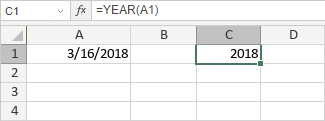

YEAR funkcija
Funkcija YEAR je jedna od funkcija za datum i vreme. Vraća godinu (broj od 1900. do 9999.) iz datuma unetog u numeričkom formatu (MM/dd/yyyy po defaultu).
Sintaksa
YEAR(serial_number)
YEAR funkcija ima sledeći argument:
| Argument | Opis |
|---|---|
| serial_number | Datum za koji želite da odredite godinu. |
Napomene
Kako primeniti YEAR funkciju.
Primeri
Na slici ispod prikazan je rezultat koji vraća YEAR funkcija.
